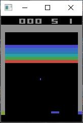
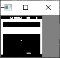
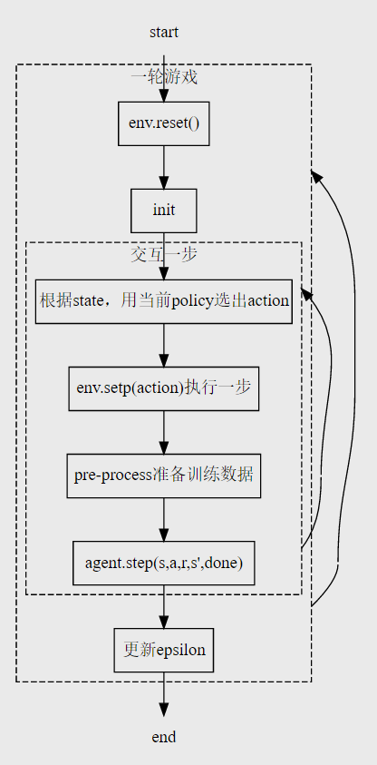

Play breakout-v0 with DQN
-
Guest Post (Part II): Deep Reinforcement Learning with Neon 机器之心翻译
-
gouxiangchen/UCL_Advanced_Deep_Learning_and_Reinforcement_Learning
-
目的：搞清哪里是影响训练效率的最主要因素。如果有可能，在不失一般性（不针对特定游戏）的情况下进行优化。
- CPU？内存大小？GPU有多大影响？
- 各个部分占用的CPU时间
- 内存的占用情况（如何随着训练时长/replay mem增长的？）
Datatype for the screen pixels is uint8, which means 1M experiences take 6.57GB - you can run it with only 8GB of memory! Default would have been float32, which would have taken ~26GB. — Guest Post (Part II): Deep Reinforcement Learning with Neon, by Tambet Matiisen
- 换用不同GPU/使用CPU mode对性能有多大影响？
- 用bit对数据进行压缩
- 训练时长的影响
-
准备工作
- psutil, pypiwin32
-
用二进制编码对状态的大小进行压缩：应该是不可行的，因为压缩之后再进行卷积运算的时候得出的结果会和标准的卷积结果不同（）
相关资料：
- UdacityUdacity课程提供的代码框架
- Deep Q-Network with Pytorch 代码跟这个差不多，也是在udacity提供的源代码基础上改的，直接用了3个全连接层
- jingweiz/pytorch-rl 包含了DQN，double DQN，dueling DQN， A3C等算法。 core/models/dqn_cnn.py中的网络结构和这个比较类似
- DeepMind-Atari-Deep-Q-Learner 论文Human-level control through deep reinforcement learning的源代码，DQN 3.0
扩展阅读
概况
-
电脑配置：CPU i5-6600K，内存 32GB @ 2133Mhz，显卡RTX 2070 8GB
-
代码架构
- tools.py：辅助函数（将游戏界面预处理）
- q_model.py: 定义QNetwork
- 网络结构
- forward
- dqn_agent.py：
- 定义agent，一个agent本身包含local & target qnetwork两个网络，及optimizer。
- step, act, learn
- 定义Replaybuffer。
- 定义agent，一个agent本身包含local & target qnetwork两个网络，及optimizer。
- deep_q_network.py：主程序，与游戏进行交互，完成training与test的功能
Maximize your score in the Atari 2600 game Breakout. In this environment, the observation is an RGB image of the screen, which is an array of shape (210, 160, 3) Each action is repeatedly performed for a duration of k frames, where k is uniformly sampled from {2, 3, 4}.
>>>env.unwrapped.get_action_meanings() [‘NOOP’, ‘FIRE’, ‘RIGHT’, ‘LEFT’]
论文Implementing the Deep Q-Network:
Training: 50,000,000 steps (each step is 4 Atari frames) Testing: 250,000 steps
[tools.py] 辅助函数:
pre_processing(observation)
def pre_process(observation):
"""Process (210, 160, 3) picture into (1, 84, 84)"""
x_t = cv2.cvtColor(cv2.resize(observation, (84, 84)), cv2.COLOR_BGR2GRAY)
ret, x_t = cv2.threshold(x_t, 1, 255, cv2.THRESH_BINARY)
return x_t- resize (210,160) -> (84,84)
- RGB->gray->binary，阈值thresh为1。超过20（或者多少？具体数值没有测试）后无法正常继续，估计是小球灰度不满足阈值。maxval: 255
retval, dst = cv.threshold(src, thresh, maxval, type[, dst])
-
返回的x_t为(84, 84)的ndarray（dtype=uint8）
-
返回的ret与设置的阈值一致（除非使用Otsu求得动态阈值）
游戏界面 预处理后界面   -
查看x_t的数据结构，看看能不能进行压缩？在pre_pocess的时候将数据调整至uint8
[q_model.py] Qnetwork网络结构(类)的初始化与前向函数
- tensor default type: torch.float32
- QNetwork类，包含初始化与forward()
5.1. QNetwork网络结构
-
输入的state维度（例）： state = torch.randn(32, 4, 84, 84)
batch size frames img height img width 32 4 84 84 其中包含32个一组（batch）的4个channel，每个channel有
像素的数据，包含了一定时间内像素的位移关系 - 二维卷积用RGB或连续帧或其它作为in_channel
-
nn.Conv2d(in_channels, out_channels, kernel_size, stride) 每个卷积核有in_channels个通道，大小为kernel_size*kernel_size，计算后得到一个二维矩阵作为输出中的一个通道
graph TB
bi["batch input:(32,4,84,84)"] -->|get one sample from batch| input["input: (1,4,84,84)"]
input --> conv1["Conv2d(state_size[1]=4,32,kernel_size=8,stride=4)
"]
subgraph conv2d
conv1 -->|32channels| relu1["ReLU"]
relu1 -->|32channels| conv2["Conv2d(32,64,kernel_size=4,stride=2)
"]
conv2 -->|64channels| relu2["ReLU"]
relu2 -->|64channels| conv3["Conv2d(64,64,kernel_size=3,stride=1)"]
conv3 -->|64channels| relu3["ReLU"]
end
relu3 -->|"[1, 64, 7 , 7]，输出为64个channel，每个channel为7*7"| flatten["flatten<br />tensor.view(state.size()[0],-1)"]
flatten -->|"[1, 3136=64*7*7]"| linear1["Linear (64*7*7=3136, 512)"]
subgraph linear
linear1 --> relu4["ReLU"]
relu4 --> linear2["Linear 512, action_size=4"]
end
linear2 --> action["action 0/1/2/3"]
forward()
- 将卷积神经网络与全连接层进行连接，从输入state得到应采用的action。
[dqn_agent.py] DQN agent
- 原始出处Udacity
- 差异：
- BATCH_SIZE从64改为32
- learning rate从5e-4改为1e-5
- learn()中## TODO到update target network为源代码作者添加
- sample()中states和next_states的np.vstack改为np.stack
Agent
init()
- 初始化local QNetwork和target QNetwork
- optimizer选择Adam，对local QNetwork的参数进行优化
- 初始化ReplayBuffer。
step()
- 将(s, a, r, s’, done)加入memory。
- 每UPDATE_EVERY=4步，如果memory中有足够的sample（大于BATCH_SIZE=32），进行一次experiences=self.memory.sample()随机取样，进行一次学习self.learn(experiences, GAMMA=0.99)。
act()
- **为什么要做self.qnetwork_local.train()？**好像在training和test都把train设置为default的1了
- state = torch.from_numpy(state).float().unsqueeze(0).to(device)是不是这儿可以改一个类型进行压缩
- unsqueeze
- model.eval() will notify all your layers that you are in eval mode, that way, batchnorm or dropout layers will work in eval mode instead of training mode.
- torch.no_grad() impacts the autograd engine and deactivate it. It will reduce memory usage and speed up computations but you won’t be able to backprop (which you don’t want in an eval script). — ‘model.eval()’ vs ‘with torch.no_grad()’
- torch.from_numpy(state)默认转为torch.uint8的tensor。（需转为float才可以带入网络进行运算？）
- 用
-greedy平衡explore & exploit - np.argmax(action_values.cpu().data.numpy())
learn()
## TODO: compute and minimize the loss
# Get max predicted Q values (for next states) from target model
Q_targets_next = self.qnetwork_target(next_states).detach().max(1)[0].unsqueeze(1)
# Compute Q targets for current states
Q_targets = rewards + (gamma * Q_targets_next * (1 - dones))
# Get exprected Q values from local model
Q_expected = self.qnetwork_local(states).gather(1, actions)
# Compute loss
loss = F.mse_loss(Q_expected, Q_targets)
# Minimize the loss
self.optimizer.zero_grad()
loss.backward()
self.optimizer.step()- 取出target Q-network中的值
- 更新local和target Q-network
soft_update()
ReplayBuffer
ReplayBuffer.add()
- 将(s,a,r,s’,done)加入ReplayBuffer，state是nparray，dtype为uint8
ReplayBuffer.sample()
- 为什么是.float()
- 提取状态重组中若把states = torch.from_numpy(np.stack([e.state for e in experiences if e is not None])).float().to(device)中的stack改为vstack （类似的，next_states） np.vstack后得到(128,84,84) np.stack后得到(32, 4, 84, 84) RuntimeError: Expected 4-dimensional input for 4-dimensional weight 32 4 8 8, but got 3-dimensional input of size [128, 84, 84] instead
[deep_q_network.py] DQN training
deep_q_network.dqn()
- Episode = 30000, 每个episode中最多跑40000步
- 采用当前policy选择act (流程图图例缺少从更新epsilon到reset的连线，之后需要想办法补上) 